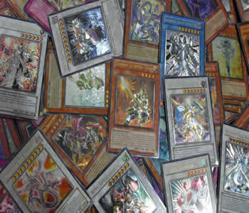

Creativity
I'm a very creative person, I love to make and create. Some of the things I create are like Video Games, Websites, Forums, Trading Card Games, Board Games, Videos, and more. Lately my big projects have been based on Video Games, Videos, and Trading Card Games. These entire things take a lot of process and even more when I'm busy with college. The reason I like to create these things, is because is what I've liked to do. For example: I like to play Video Games; therefore I make them. I like to watch videos; therefore I make them. I like to play Trading Card Games; therefore I make them. I have been getting ideas and starting different projects in all the areas and barely ever get to finish them, but I do save all my projects, even those I started since I was 7 years old. I'll talk about some of the videos I've been making lately.
Video Game Maker
Back then when I first started making videos, they were about my favorite anime shows. I would make animated music videos about them with some clips of the show and my favorite background music. Then, since I've grown into gaming so much, I started gaming and making videos from my gameplays. Although I don't have the best of programs to capture what I play, I do my best with what I have. Since I've always been onto Trading Card Games, I make videos of opening some of the packs and showing off whatever I pull out of them. I'm not very famous in YouTube, but I enjoy making videos. Hopefully someday I would grow out to be famous in it and make money out of it. But let's keep that in the hopes and dreams for now.
I love to play video games, and right after I play them, I love to make video games! I've been using engines on the internet to make my own video games. Some of the engines I've used are: GameMaker, RPG Maker XP, RPG Maker 2k, and Unity 3D. With these engines I've been trying to make my dream games just the way I want it. With gaming experience and good creativity, I'm sure I can create great games. Although Game Maker was my main idea of Major, after taking Programming in High School, I realized that I got way too frustrated with the coding and could not do it until I surpassed that. Therefore I moved onto something much easier that I also liked, which is Web Design. Some of the games I've been making for computer are RPG, because that's my favorite genre of games. But along with that I've been trying out different things using the GameMaker engine, such as platform games, multiplayer games, and maze games. I had to put a hold on Unity3D until I learned a few languages on college, but I'd love to make my first FPS game in that engine. I've already made a few games for the church, such as Family Feud-style ones, which are fun to play with the family or church events. Right now my big projects are on a series of RPG games I want to make, but just making the script is taking me forever. I don't want to copy other companies and I want to be original on my projects, that way I can move onto selling them and getting money out of that too. Talents are made to be used.
Trading Card Game Maker

In the second semester I took the Web Development class online to increase my skills to what I already learned in High School's Web Design class. After starting the class and reading the Head First HTML and CSS book, I knew this was going to be an awesome class. The book and the class were perfect for starting out as a new Web Designer in the making. Everything was simple and easy, but attention was something highly required which I learned the hard way after a few failures. In the blink of an eye, semester is over and I could tell that I have learned a lot out of this class. Now I have to go even further to hone my skills to the fullest.